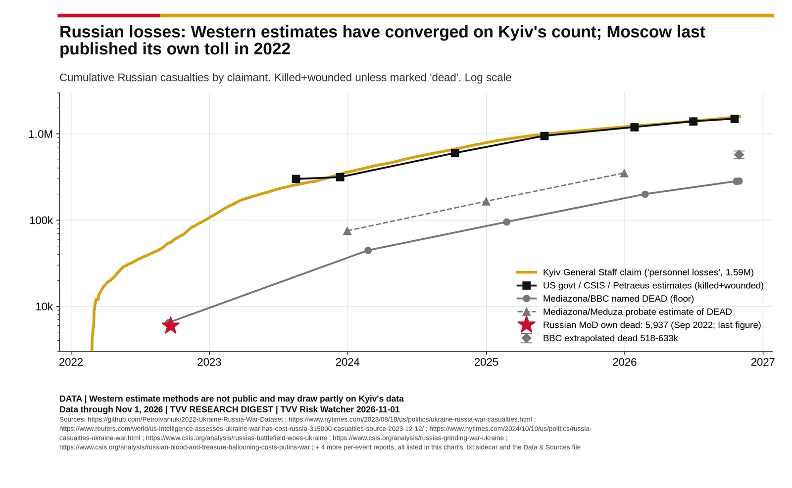
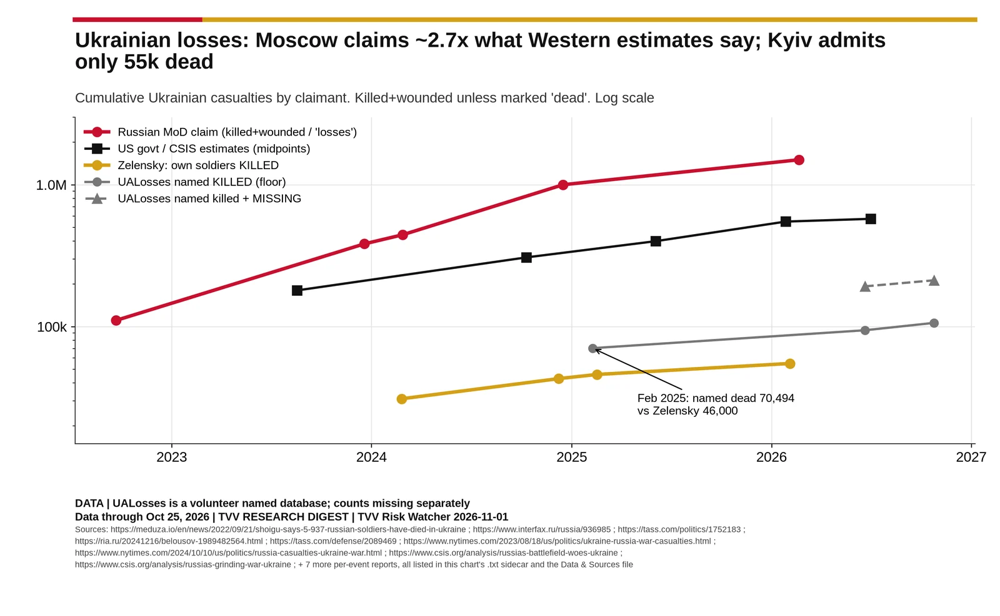
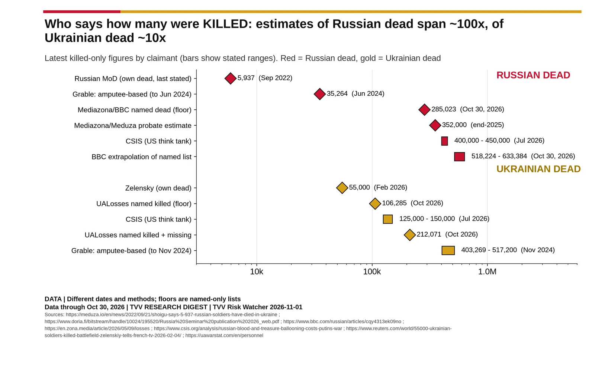

Claims by Side
Who says what: Kyiv's, Moscow's, Western and independent (named-dead) figures for each side's losses, labelled by claimant.

Source: https://github.com/PetroIvaniuk/2022-Ukraine-Russia-War-Dataset https://www.nytimes.com/2023/08/18/us/politics/ukraine-russia-war-casualties.html https://www.reuters.com/world/us-intelligence-assesses-ukraine-war-has-cost-russia-315000-casualties-source-2023-12-12/ https://www.nytimes.com/2024/10/10/us/politics/russia-casualties-ukraine-war.html https://www.csis.org/analysis/russias-battlefield-woes-ukraine https://www.csis.org/analysis/russias-grinding-war-ukraine https://www.csis.org/analysis/russian-blood-and-treasure-ballooning-costs-putins-war https://www.russiamatters.org/news/russia-ukraine-war-report-card/russia-ukraine-war-report-card-oct-21-2026 https://www.bbc.com/russian/articles/cqy4313ek09no https://en.zona.media/article/2026/05/09/losses https://meduza.io/en/news/2022/09/21/shoigu-says-5-937-russian-soldiers-have-died-in-ukraine

Source: https://meduza.io/en/news/2022/09/21/shoigu-says-5-937-russian-soldiers-have-died-in-ukraine https://www.interfax.ru/russia/936985 https://tass.com/politics/1752183 https://ria.ru/20241216/belousov-1989482564.html https://tass.com/defense/2089469 https://www.nytimes.com/2023/08/18/us/politics/ukraine-russia-war-casualties.html https://www.nytimes.com/2024/10/10/us/politics/russia-casualties-ukraine-war.html https://www.csis.org/analysis/russias-battlefield-woes-ukraine https://www.csis.org/analysis/russias-grinding-war-ukraine https://www.csis.org/analysis/russian-blood-and-treasure-ballooning-costs-putins-war https://www.bbc.com/news/world-europe-68397525 https://www.pravda.com.ua/eng/news/2024/12/8/7488226/ https://kyivindependent.com/over-46-000-ukrainian-soldiers-killed-since-start-of-war-zelensky-says/ https://www.reuters.com/world/55000-ukrainian-soldiers-killed-battlefield-zelenskiy-tells-french-tv-2026-02-04/ https://ualosses.org/en/statistics/ https://uawarstat.com/en/personnel

Source: https://meduza.io/en/news/2022/09/21/shoigu-says-5-937-russian-soldiers-have-died-in-ukraine https://www.doria.fi/bitstream/handle/10024/195520/Russia%20Seminar%20publication%202026_web.pdf https://www.bbc.com/russian/articles/cqy4313ek09no https://en.zona.media/article/2026/05/09/losses https://www.csis.org/analysis/russian-blood-and-treasure-ballooning-costs-putins-war https://www.reuters.com/world/55000-ukrainian-soldiers-killed-battlefield-zelenskiy-tells-french-tv-2026-02-04/ https://uawarstat.com/en/personnel